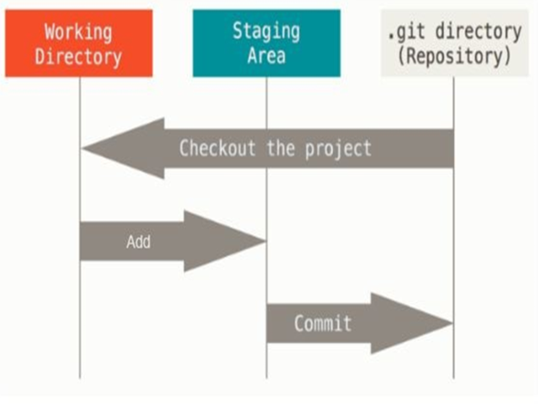

git config
- git: hace referencia al programa y config: indica a git que vamos a modificar un elemento de configuración.
- global: el elemento de configuración se va a cambiar de forma global (en toda la computadora) y se usará como valor por defecto cuando no exista de forma local. user.name y user.email: son las configuraciones que cambiamos
- De esta forma, le estamos diciendo a Git con que nombre y dirección de mail tiene que guardar los cambios que realicemos
Estados principales
Es importante mencionar que git cuenta con 3 estados: confirmado (commited), modificado (modified) y preparado (staged).
- Modificado significa que modificamos el archivo pero todavía no lo hemos
confirmado a nuestro repositorio.
- Preparado significa que marcamos un archivo modificado en su versión
actual para que vaya en tu próxima confirmación.
- Confirmado significa que los datos están almacenados de manera segura en
nuestro repositorio local.
Distintos Estados

Verificando
- Podemos corroborar que se creó verificando que se haya creado en ese
directorio una carpeta con el nombre .git. Es en esta carpeta donde Git
almacena todos los cambios y configuraciones de nuestro repositorio.
- Para verificar el estado de nuestro repositorio ejecutamos el comando git status.
En este caso la salida debería ser similar a esta:C:\Users\Secretaría 2\Desktop\UNAF-DESARROLLADOR DE SOFTWARE>git
status
Agregar nuevo archivo
- Vamos a crear un nuevo archivo llamado compras.txt. Una vez que lo hayamos creado
volvemos a ejecutar git status.
- Lo que Git nos dice acá es que tenemos “Untracked files” o archivos sin versionar y
nos muestra una lista donde aparece nuestro archivo. También nos indica que para
agregarlo en un commit debemos usar el comando git add seguido de la ruta del
archivo.Ejemplo: "git add compras.txt"
- Este comando no devolverá ningún resultado. Lo que el comando
add hace es pasar al archivo al estado denominado stage.
git add acepta otro tipo de parámetros que nos serán útiles para trabajar con varios
archivos a la vez, por ejemplo: "git add *.jpg agregará todos los archivos cuyo nombre termine en .jpg al área de stage."
"git add . agregará todos los archivos modificados y/o no trackeados al área de stage."
commit
- Git nos indica que en el próximo commit se incluirá el archivo compras.txt que acabamos de crear y agregar al repositorio.
- git commit -m "crado el archivo compras"
- El comando git commit confirma los cambios del área de stage y los guarda en el
repositorio. El parámetro -m es requerido y se utiliza para asociar un mensaje al
commit que estemos haciendo. Este mensaje va siempre entre comillas dobles. Es
muy importante que los mensajes sean lo suficientemente descriptivos como para
que si el día de mañana revisamos la historia de nuestro repositorio sepamos donde
se hizo cada cambio o conjunto de cambios.
Ver el log
- Para revisar el historial de nuestro repositorio usamos el comando git log
- Ahí se ven todos nuestros commits, desde el más nuevo hasta el más viejo.
- También se ve el autor (con los datos que ingresamos previamente) y la
fecha en la que fueron realizados, así como también el mensaje que se
incluyó en cada commit.
Ignorar archivos
- A veces es necesario indicar a Git que no realice seguimiento alguno sobre algunos archivos. Para
esos casos contamos con un archivo especial que llamaremos .gitignore donde podemos definir
las reglas de los archivos a ignorar. Vamos a usar nuestro editor para crear un nuevo archivo
llamado privado.txt.
- Una vez creado, si ejecutamos el comando git status podemos ver que figura como archivo no
trackeado. Para hacer que Git ignore por completo este archivo, simplemente creamos el archivo
.gitignore (punto gitignore) en la carpeta raíz de nuestro repositorio y escribimos en él la ruta del
archivo que queremos ignorar, en nuestro caso, privado.txt.
- Si ejecutamos una vez más el comando git status , vemos que privado.txt ya no aparece como
archivo nuevo. El que aparece ahora es .gitignore, que debemos agregar y commitear para hacer
permanente nuestra lista de archivos ignorados.
Trabajo Practico